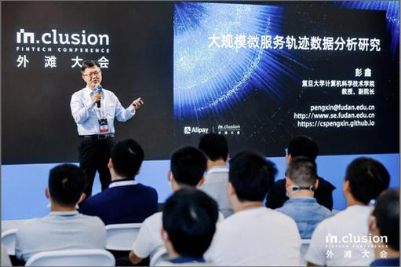

老师简介
彭鑫老师是复旦大学计算机科学技术学院副院长、教授、博士生导师。于2001年和2006年分别在复旦大学取得计算机专业学士和博士学位。彭老师所领导的复旦大学CodeWisdom团队关注于大数据、人工智能与软件工程的结合，具体研究方向包括代码大数据分析、软件智能化开发、云原生与智能化运维、人机物融合泛在系统软件、机器人软件技术。同时，他也担任软件学院软件工程本科课程的主讲教师。
彭鑫教授
问答环节
MSCer：您当初报考大学的时候计算机应该算是新兴专业，您是出于什么样的原因选择了这个专业呢？
彭鑫老师：我是九七年进入复旦的，读高中的时候确实很少有计算机。当时在我们学校旁边有一家比较新兴的店，放了几台电脑可以用来玩游戏，现在回想起来是早期的类似于三国一类的游戏，当时跟着同学去玩还是觉得挺有意思的。其实我高中是化学课代表，高考之后化学老师建议我报考化学，但是我觉得我对化学好像不是很感兴趣。虽然当时对计算机基本上没什么了解，只是接触过几次，还是把电脑当成游戏机来用的，但是感觉挺有意思，所以我就选了计算机。
MSCer：在本科四年的学习过程中，您对计算机的认识有一个什么样的变化呢 ？
彭鑫老师：说到变化的话，我觉得入门还是挺难的，因为我们高中完全没有计算机基础。一开始学C语言，到了期中的时候才写出一个最简单的程序，这个时候才稍微有一点感觉。我觉得可能是因为缺少基础知识的铺垫。如果先对计算机整体结构和原理有一个了解，然后再去学习C语言等专业知识可能会好一点。
大家现在学习计算机和软件专业知识也需要结合现实世界问题背景建立相应的思维方式，也就是计算思维。我们就算不用计算机也可以用一种程序化的思维来考虑问题。例如，我们做一件事情要分为几步，或者有个判断说如果今天天气好我就去打球，如果天气不好就干另外的事情。这不就是个分支吗？循环也是如此，我打电话给某个人，他不回我过五分钟再打过去，这就是一个循环。
MSCer：您本科结束后选择去读研、读博，是因为觉得研究很有意思吗，或者出于其他什么原因？
彭鑫老师：选择读研那时候其实想法很简单，就是感觉自己还没准备好。现在很多读研的同学可能也是这样想的，还没准备好走向社会，因此想在学校里再呆两年。至于读博应该算是一个偶然的选择，幸运的是现在看起来这个选择是对的，学校这样的工作环境比较适合我这种性格，虽然也有些忙碌但是可以自主安排和调节自己的时间。总的来看，人生道路上很多的选择都是偶然和必然交织的结果。对于我而言，到目前为止可能总体上还算是幸运的，在人生几个重要的十字路口做出的选择结果都还算不错。
MSCer：现在您是老师，您觉得现在的课程跟您当年学的课程有什么不一样？教学的方式发生了什么变化？
彭鑫老师：我觉得很多地方还是有很大变化的。第一，我们现在讲的很多东西，应该还是非常注重动手能力。第二个是同学们的视野，也比以前开阔得多。
我们读大学的时候网络才刚刚兴起。记得我们大二大三到机房去，申请个邮箱半个小时都还没成功，光看那个浏览器图标转来转去一直不出结果。网速非常地慢，内容非常少，而且还得花钱上网。现在大家的眼界大不一样了，相应的课程内容随着时代的变化也是大不一样了。那个时候我们学的是很多经典的东西，现在讲的很多东西一定程度上看是与时俱进了，跟最新的技术和产业发展有很多结合，会更多地反映最新技术的变化，包括IT市场和生态的变化。

MSCer：您刚才提到我们这个专业还是比较好找工作的，但是还是有很多同学，感觉到忙碌且迷茫，感觉努力了，但是没有进步，所以想问老师对这种状况有什么建议吗？
彭鑫老师：首先你要明确你将来要干什么，我觉得大家还是要把硬核的技术搞好，所以我经常说，包括往届同学的评价也是这么说，做lab做得很累，但是一旦你熬过来了之后，你回头看你会觉得很有收获。我觉得咱们复旦的整体氛围强调的更多的是人文情怀，这我觉得很好，但是计算机、软件这个行业，它就是很典型工科行业，所以作为咱们这个专业的同学，一定是要吃点苦，磨练磨练自己。
如果你想走计算机或者软件工程这条路的话，代码量尽量多一点。同时，知识和技能掌握需要有一定的广度。大家根据兴趣爱好可以有所侧重，但是不能别的方面一点也不了解。例如，我们的课程实践项目中，有的同学在组里负责前端，对后端开发技术一点不了解，这也是不行的。
另外，大家需要对我们的专业内涵有所理解，不是会写点简单程序就可以了。现在社会上有很多速成的软件开发培训班。这说明什么？如果你做的是简单增删改查、写个网页真的没必要来这个专业。我们的专业优势在于我们受过更专业更系统的训练，其中很大的一块就是计算机系统。计算机从最底层的硬件到最上层的应用软件是如何一起工作的，中间的过程是怎么样的，这些都需要有比较透彻的了解。只有这样，未来针对实际问题所给出的解决方案才会比人家更先进，因为理解整个系统的实现原理，而不是只会照葫芦画瓢。
我最后想提的是说，大家不要过于安逸了。安逸会让你们失去前进的动力，从而逐渐丧失竞争力。当然，现代社会比较强调个人的自主发展，有的同学可能追求舒适的生活、不想太累了，这也不能说他不对。但是，如果你不费什么力气就能到达现在这个层面，那么说明你努力一点的话还可以到更高的层次。所以真的还是希望大家有点追求，不要荒度光阴。很多同学毕业后都会做软件工程师，俗称“码农”，但是总不能一辈子都只是码代码，总要向不同的方面发展，例如架构师、产品经理、行业专家等。这需要能力和经验的长期积累，要么是技术积累，要么是技术与行业和业务相结合。
总之你在学生时代的奋斗都是值得的。如果你在大学能更加努力，未来你掌握自己命运的程度就能更高一点。谢谢！
采访｜陶心愉 夏梦洁
图片均由彭鑫教授提供